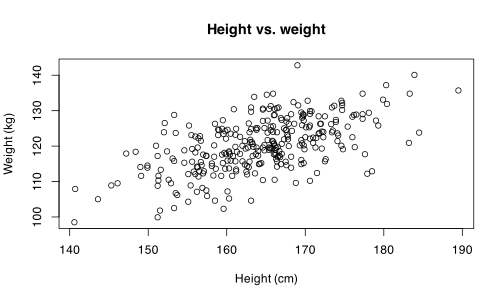
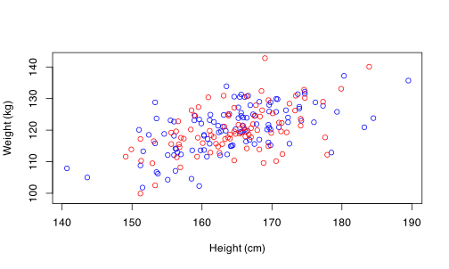
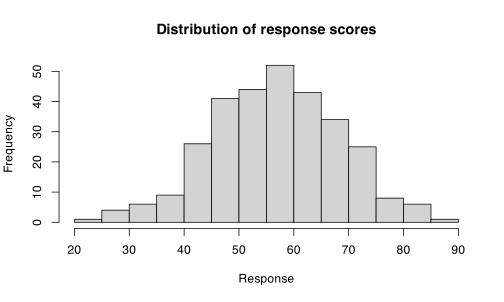
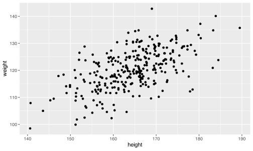
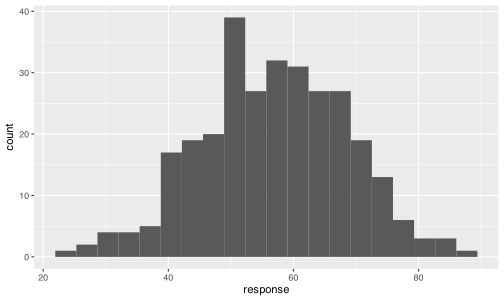
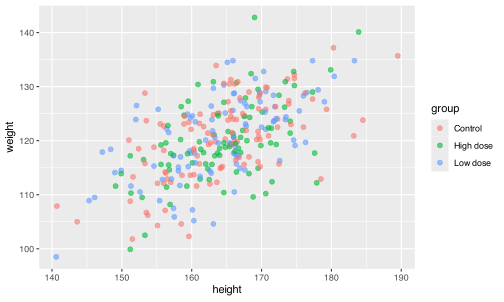
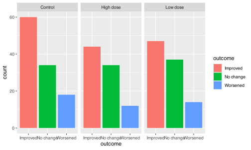
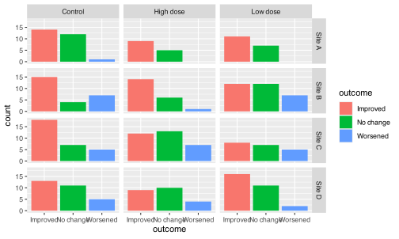
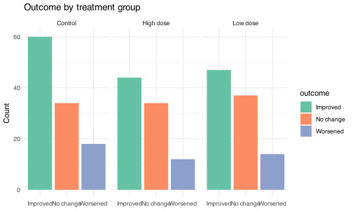

viz_data <- readr::read_csv("data/viz_data.csv")
head(viz_data)
#> # A tibble: 6 × 8
#> id group site height weight bmi response outcome
#> <dbl> <chr> <chr> <dbl> <dbl> <dbl> <dbl> <chr>
#> 1 1 High dose Site B 164 119. 44.1 62.1 Improved
#> 2 2 High dose Site A 170. 130. 45.1 55.3 Improved
#> 3 3 High dose Site B 175. 130. 42.7 59.1 Improved
#> 4 4 Low dose Site B 166 118. 42.7 65.9 No change
#> 5 5 High dose Site B 157. 117. 47.3 63.3 Improved
#> 6 6 Low dose Site B 160. 118. 46.3 60.6 WorsenedData visualisation
This is the reward of today. After your hard earned effort in learning data types, operations, and data importation, you now get to produce beautiful plots to show off to the world!
You should now have viz_data loaded, with 300 simulated patients across three treatment groups (Control, Low dose, High dose) and four study sites, along with height, weight, BMI, a numeric response score, and a categorical outcome. This one dataset will be used to demonstrate every plot type below.
Plotting systems in R
R doesn’t have just one way to make plots — three major systems coexist, and you’ll likely encounter all of them in the wild.
-
Base R graphics work out of the box, with no packages required. Functions like
plot()andhist()are available the moment you open R. They’re quick for exploratory work, but customizing them (legends, colors, layering) can get verbose. - lattice is a package (also bundled with base R installations) designed around the idea of trellis graphs — plots automatically split into panels by one or more grouping variables. It predates ggplot2 and is still used in some statistical packages’ example code, but has mostly been superseded by ggplot2 for everyday use.
- ggplot2 is the most popular modern plotting package, and comes bundled with the tidyverse. It implements the “grammar of graphics,” where a plot is built by layering components (data, aesthetics, geometries, scales, facets, themes) rather than issuing one big plotting command. This makes complex plots more consistent and reusable, at the cost of a small learning curve up front.
Simple base R plots
Base R gives you a handful of functions that you compose together, adding to the same plot rather than layering it as separate objects.
-
plot()is the general-purpose function for scatterplots (and more). For two numeric vectors, it draws points by default.plot(viz_data$height, viz_data$weight, xlab = "Height (cm)", ylab = "Weight (kg)", main = "Height vs. weight")
-
points()adds more points to an existing plot, without starting a new one — useful for overlaying a second group.plot(viz_data$height[viz_data$group == "Control"], viz_data$weight[viz_data$group == "Control"], col = "blue", xlab = "Height (cm)", ylab = "Weight (kg)", xlim = range(viz_data$height), ylim = range(viz_data$weight)) points(viz_data$height[viz_data$group == "High dose"], viz_data$weight[viz_data$group == "High dose"], col = "red")
lines()adds connected line segments to an existing plot — handy for trend lines or time series.-
abline()draws a straight line across the whole plot, often used to add a reference line or a fitted regression line (e.g.,abline(lm(weight ~ height, data = viz_data))). -
hist()draws a histogram of a single numeric vector, automatically choosing bins (which you can override with thebreaksargument).hist(viz_data$response, main = "Distribution of response scores", xlab = "Response")
ggplot2
Unlike base R, where each function call adds to a running plot, ggplot2 builds a plot as a single object, with each + adding a new layer or setting. This means you can save an incomplete plot to a variable, then keep amending it later — a very different mental model from base R’s “draw, then annotate” approach.
Simple plots (geoms)
Each geom_*() function draws a different kind of layer, and you combine data, aesthetics, and one or more geoms with +:
-
geom_point()for scatterplots. -
geom_line()for connected line plots (typically over time or an ordered x-axis). -
geom_bar()for bar charts where ggplot counts rows for you (one bar per category). -
geom_col()for bar charts where you already have the bar heights as a column in your data. -
geom_histogram()for histograms of a continuous variable. -
geom_density()for a smoothed density curve, often used as a continuous alternative to a histogram. -
geom_tile()for heatmap-style tiles, typically mapping a third variable to fill color across two categorical/continuous axes.
ggplot(viz_data, aes(x = height, y = weight)) +
geom_point()
ggplot(viz_data, aes(x = response)) +
geom_histogram(bins = 20)
aes() for aesthetics
The aes() function maps variables in your data to visual properties of the plot: color and fill control outline and fill colors (useful for distinguishing groups), alpha controls transparency (useful when points overlap), size and stroke control point size and outline thickness, and linewidth and linetype control the thickness and dash pattern of lines.
ggplot(viz_data, aes(x = height, y = weight, color = group)) +
geom_point(alpha = 0.6, size = 2)
Grouping and faceting
Sometimes you want one plot with groups distinguished by color (via aes(group = ...), color, or fill), and sometimes you want groups split into entirely separate panels:
-
facet_wrap()splits a plot into panels based on one variable, wrapping panels into a grid. -
facet_grid()splits a plot into a grid of panels based on one or two variables (rows and/or columns).
ggplot(viz_data, aes(x = outcome, fill = outcome)) +
geom_bar() +
facet_wrap(~ group)
ggplot(viz_data, aes(x = outcome, fill = outcome)) +
geom_bar() +
facet_grid(site ~ group)
Tweaking the looks
-
Themes (e.g.,
theme_minimal(),theme_bw(),theme_classic()) change the overall visual style of a plot — background, gridlines, fonts — without touching the data or geoms. -
Scales (e.g.,
scale_color_manual(),scale_x_continuous(),scale_fill_brewer()) control how data values map to visual properties: which colors represent which groups, how axis breaks and labels appear, and so on.
ggplot(viz_data, aes(x = outcome, fill = outcome)) +
geom_bar() +
facet_wrap(~ group) +
scale_fill_brewer(palette = "Set2") +
theme_minimal() +
labs(title = "Outcome by treatment group", x = NULL, y = "Count")
Saving plots
Once you’re happy with a plot, ggsave() writes it to a file (PDF, PNG, JPEG, etc.), inferring the format from the file extension. It’s good practice to save plots into their own subfolder, created with dir.create() if it doesn’t already exist.
dir.create("plots", showWarnings = FALSE)
p <- ggplot(viz_data, aes(x = outcome, fill = outcome)) +
geom_bar() +
facet_wrap(~ group) +
theme_minimal()
ggsave("plots/outcome_by_group.pdf", plot = p, width = 8, height = 5)